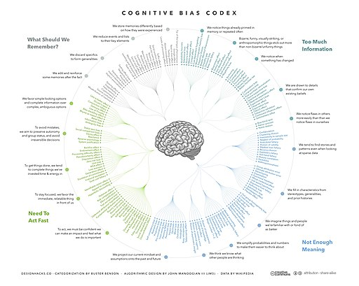

Often times we swiftly come to conclusions or decisions, without being aware that
Hence, one of the important points of view we need to retain is to be aware of our Cognitive Biases. Being aware of this may be the first step to check ourselves and therefore arrive a more nuanced “appreciation of the situation”, that would then allow us to formulate our Innovative Problems better.
Let us now engage in some simple activities that show off! to us, our Cognitive Biases!
We will form into an even number of groups. Each group will be given a description of an individual. You will need to add more information about that person, working as a group.
Again, we will form into an even number of groups. Each group will be given a couple of questions with multiple choice answers. Quickly answer this and be ready for a short, dismaying, and confounding discussion.
As Kahneman says, it is good to be wise about our biases. There are ways in which one can be aware of them and try to overcome them, by say taking time and not opting for the first answer that your mind suggests, and doing some counter-factual thinking (“What if this is NOT the answer?”).
Doing so will allow us to gather research information better, ask better questions and arrive at better inferences as to the problem that we might be trying to articulate.
Kahneman, Daniel. “Thinking Fast and Slow”
Benson, Nigel C.; Ginsburg, Joannah; Grand, Voula; Lazyan, Merrin & Weeks, Marcus; Collin, Catherine, “The Psychology Handbook: Big Ideas Simply Explained”
Pashler, Harold. “Encyclopedia of the Mind”
Holyoak, Keith J.& Morrison, Robert G., “The Cambridge Handbook of Thinking and Reasoning”
Quality Enhancement Program (QEP cafe https://web.archive.org/web/20210212140014/https://sites.google.com/site/qepcafe/home